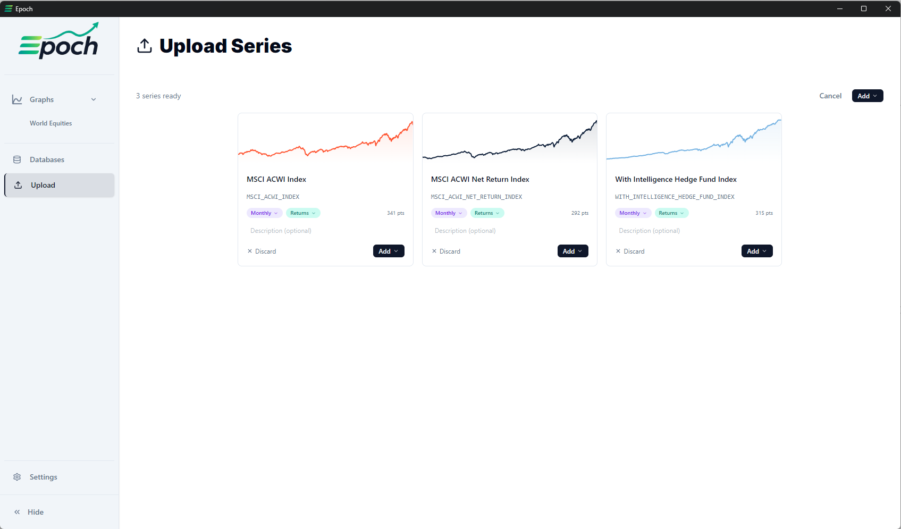
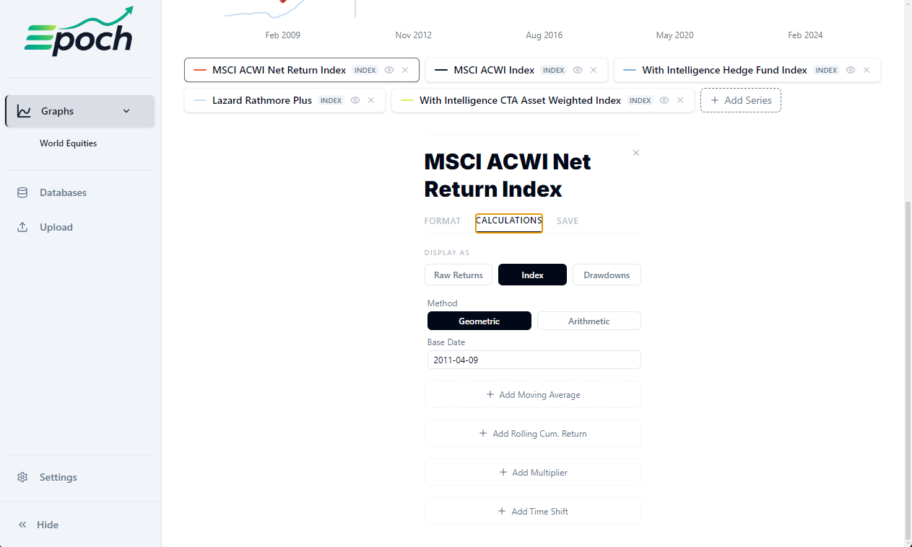
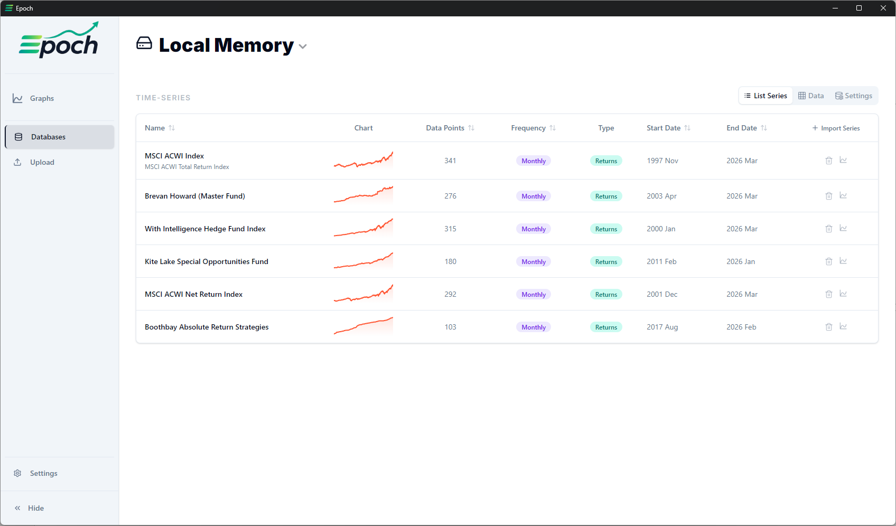

Overview
Four views, one
coherent workspace
Epoch organises everything into 3 tabs. Each one solves a distinct part of the workflow — from importing raw data to browsing a multi-source database library — without getting in the way of the others.
Interactive Chart
Multi-series charts with zoom, pan, crosshair, drag-select range, and a range of transformations applicable to time series data.
Flexible Import
Drop a CSV or Excel file, or paste tabular data directly. The app parses the data and auto-detects date formats, data types, etc. You can then review and commit the data to the database or simply add it to a graph.
Local & External Database Storage
Browse, edit, and delete series across internal and external SQLite databases.
Workflow
From raw file
to analysed chart
Step 01 — Import
Bring in your data
Drop a CSV or Excel file onto the Upload tab, or paste directly from a spreadsheet. Epoch parses multiple columns in one go, auto-detects date formats, deduplicates column codes, and strips trailing blank columns from Excel exports.
Step 02 — Review
Confirm before committing
Before any series lands in the database or one of your graphs, a review panel lets you edit the name, unique code, description, detected frequency, and data type.

Step 03 — Visualise
Explore the chart
Add any saved series to the Graph tab. Scroll to zoom the Y-axis, scroll horizontally to pan the time range, or drag-select a window. Double-click resets to full range. Once your chart looks how you want it to, you can save it for later use, or even export it to share with other Epoch users as a .tsv-graph file.

Step 04 — Transform
Reframe the data
Apply transformations to your time series data at the click of a button. Add Moving Averages, Time-shifts, Multipliers, and more.

Step 05 — Persist
Save and reconnect
Series are stored in a local SQLite database. The entire graph state — zoom range, active series, transforms, moving averages, colors — is auto-saved every 1.5 seconds and fully restored on the next launch. External .db files on network shares can be added as read/write data sources. They are fully modifyable within the app and shareable.
